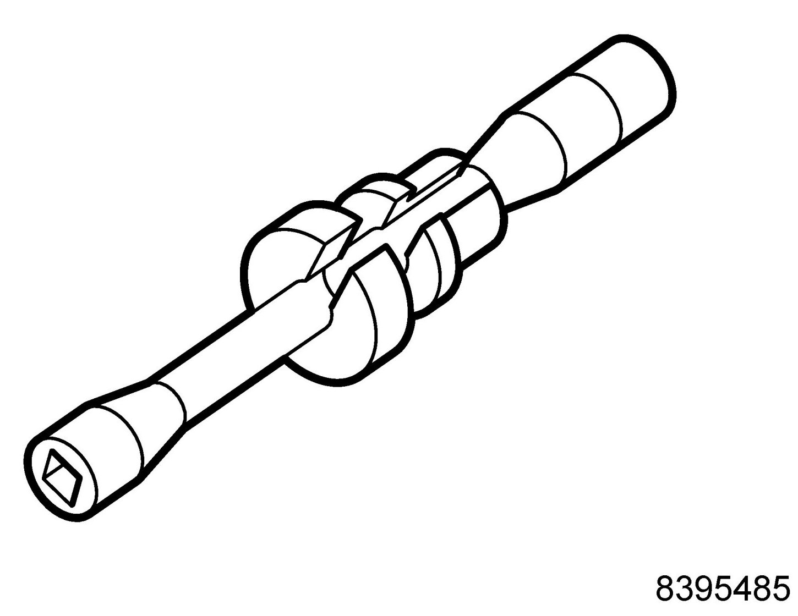
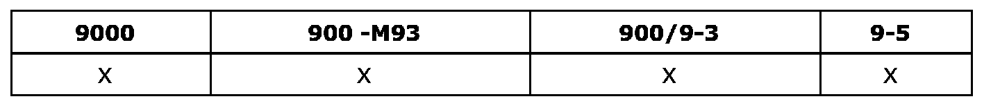

Operation CHARM
: Car repair manuals for everyone.
Home
>>
Saab
>>
2011
>>
9-3 FWD (9440) L4-2.0L Turbo
>>
Repair and Diagnosis
>>
Powertrain Management
>>
Ignition System
>>
Spark Plug
>>
Tools and Equipment
Spark Plug: Tools and Equipment
83 95 485
Spark Plug
Socket Assembly With Locating Sleeves

86 12 798 Toolboard T1 Service
Group: Engine
